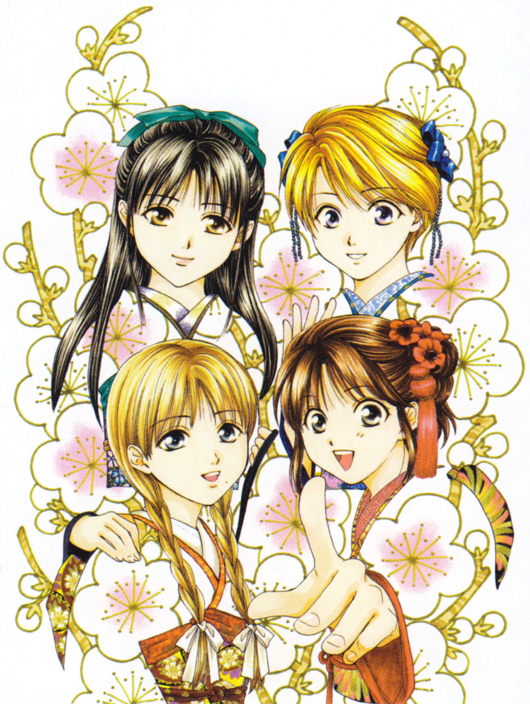
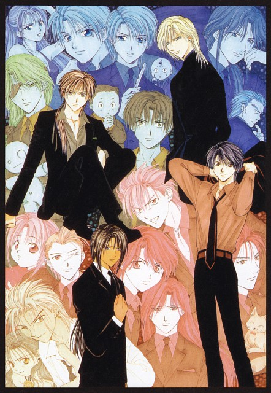
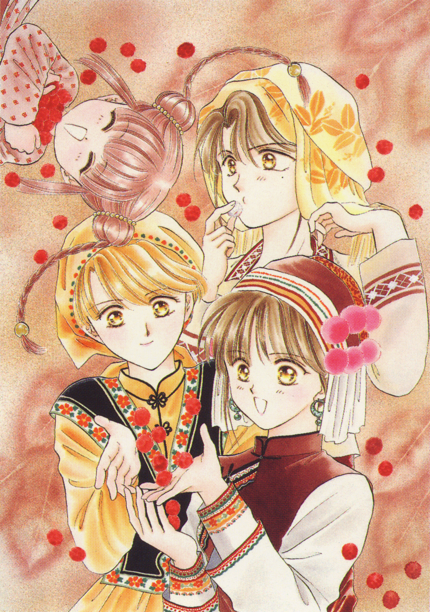
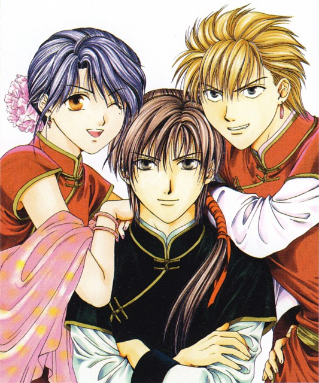
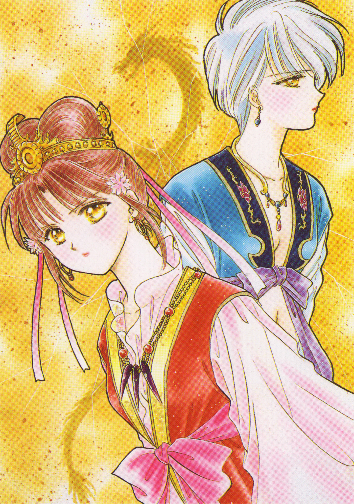
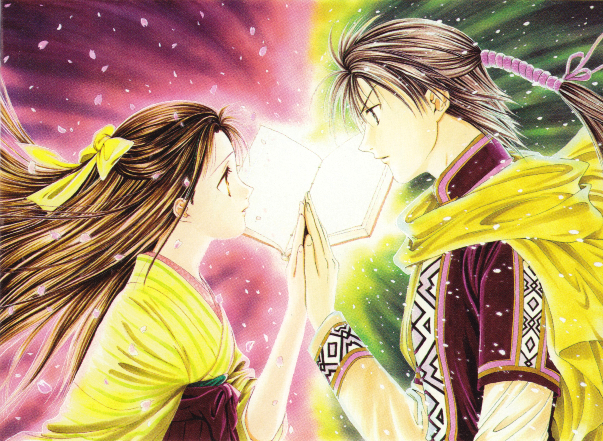
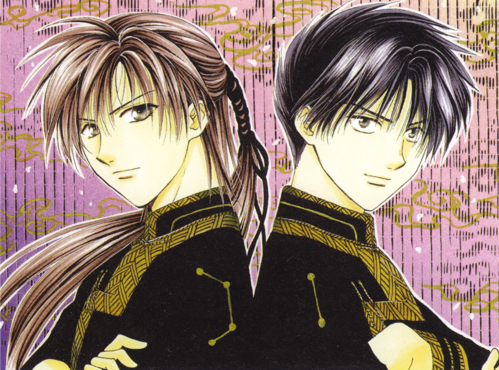

Some Art Book images
Images from the four constellations
There are the images with the representation of the four gods.


Priesstess and the Celestial Warriors
The four Priesstess and their Warriors. At the final one, there are Uruki (from Genbu) and Nuriko and Tasuki (from Suzaku).




Miaka and Yui with her warriors
In both images can be seen Miaka and Yui with their respective warriors.


Miaka and Yui being Enemmies
Photos when Suzaku and Seiryuu were enemmies.


Byakko
Takiko, Uruki and Tomite.


Game
Fushigi Yuugi has games, for PS2 and NDS. But this caratula is from the PS2 one.